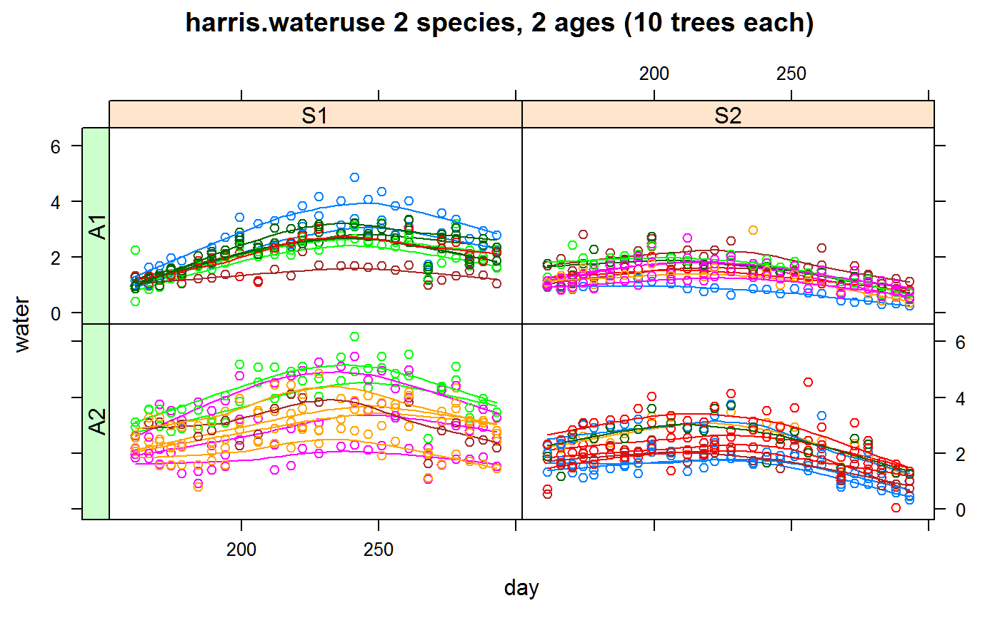
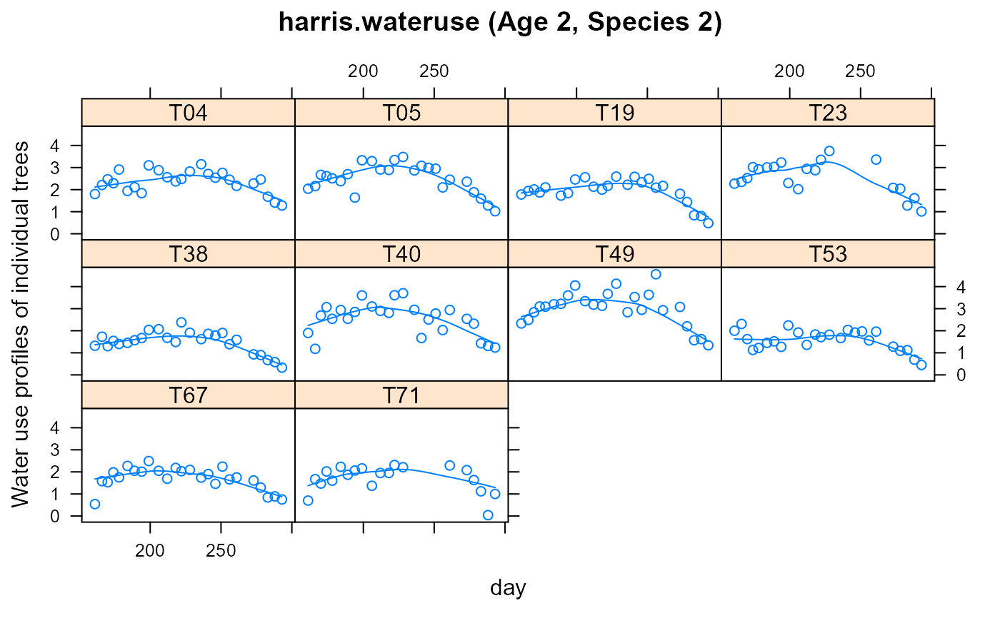

harris.wateruse.RdWater use by horticultural trees
A data frame with 1040 observations on the following 6 variables.
speciesspecies factor, 2 levels
ageage factor, 2 levels
treetree factor, 40 (non-consecutive) levels
dayday, numeric
waterwater use, numeric
Ten trees in each of four groups (two species, by two ages) were assessed for water usage, approximately every five days.
Missing values are included for the benefit of asreml, which needs a 'balanced' data set due to the kronecker-like syntax of the R matrix.
Used with permission of Roger Harris at Virginia Polytechnic.
Schabenberger, Oliver and Francis J. Pierce. 2002. Contemporary Statistical Models for the Plant and Soil Sciences. CRC Press. Page 512.
# \dontrun{ library(agridat) data(harris.wateruse) dat <- harris.wateruse # Compare to Schabenberger & Pierce, fig 7.23 libs(latticeExtra)#> #>#> #> #>useOuterStrips(xyplot(water ~ day|species*age,dat, as.table=TRUE, group=tree, type=c('p','smooth'), main="harris.wateruse 2 species, 2 ages (10 trees each)"))# Note that measurements on day 268 are all below the trend line and # thus considered outliers. Delete them. dat <- subset(dat, day!=268) # Schabenberger figure 7.24 xyplot(water ~ day|tree,dat, subset=age=="A2" & species=="S2", as.table=TRUE, type=c('p','smooth'), ylab="Water use profiles of individual trees", main="harris.wateruse (Age 2, Species 2)")# Rescale day for nicer output, and convergence issues, add quadratic term dat <- transform(dat, ti=day/100) dat <- transform(dat, ti2=ti*ti) # Start with a subgroup: age 2, species 2 d22 <- droplevels(subset(dat, age=="A2" & species=="S2")) # ----- Model 1, for subgroup A2,S2 # First, a fixed quadratic that is common to all trees, plus # a random quadratic deviation for each tree. ## Schabenberger, Output 7.26 ## proc mixed; ## class tree; ## model water = ti ti*ti / s; ## random intercept ti ti*ti/subject=tree; libs(nlme,lucid)#> #>#> #> #>## We use pdDiag() to get uncorrelated random effects m1n <- lme(water ~ 1 + ti + ti2, data=d22, na.action=na.omit, random = list(tree=pdDiag(~1+ti+ti2))) # vc(m1n) ## effect variance stddev ## (Intercept) 0.2691 0.5188 ## ti 0 0.0000144 ## ti2 0 0.0000039 ## Residual 0.1472 0.3837 if(0){ # Various other models with lme4 & asreml libs(lme4, lucid) m1l <- lmer(water ~ 1 + ti + ti2 + (1|tree) + (0+ti|tree) + (0+ti2|tree), data=d22) # vc(m1l) ## grp var1 var2 vcov sdcor ## tree (Intercept) <NA> 0.2691 0.5188 ## tree.1 ti <NA> 0 0 ## tree.2 ti2 <NA> 0 0 ## Residual <NA> <NA> 0.1472 0.3837 # Once the overall quadratic trend has been removed, there is not # too much evidence for consecutive observations being correlated ## d22r <- subset(d22, !is.na(water)) ## d22r$res <- resid(m1n) ## xyplot(res ~ day|tree,d22r, ## as.table=TRUE, type=c('p','smooth'), ## ylab="residual", ## main="harris.wateruse - Residuals of individual trees") ## op <- par(mfrow=c(4,3)) ## tapply(d22r$res, d22r$tree, acf) ## par(op) # ----- Model 2, add correlation of consecutive measurements ## Schabenberger (page 516) adds correlation. ## Note how the fixed quadratic model is on the "ti = day/100" scale ## and the correlated observations are on the "day" scale. The ## only impact this has on the fitted model is to increase the ## correlation parameter by a factor of 100, which was likely ## done to get better convergence. ## proc mixed data=age2sp2; ## class tree; ## model water = ti ti*ti / s ; ## random intercept /subject=tree s; ## repeated /subject=tree type=sp(exp)(day); ## Same as SAS, use ti for quadratic, day for correlation m2l <- lme(water ~ 1 + ti + ti2, data=d22, random = ~ 1|tree, cor = corExp(form=~ day|tree), na.action=na.omit) m2l # Match output 7.27. Same fixef, ranef, variances, exp corr # vc(m2l) ## effect variance stddev ## (Intercept) 0.2656 0.5154 ## Residual 0.1541 0.3926 # --- ## Now use asreml. When I tried rcov=~tree:exp(ti), ## the estimated parameter value was on the 'boundary', i.e. 0. ## Changing rcov to the 'day' scale produced a sensible estimate ## that matched SAS. ## Note: SAS and asreml use different parameterizations for the correlation ## SAS uses exp(-d/phi) and asreml uses phi^d. ## SAS reports 3.79, asreml reports 0.77, and exp(-1/3.7945) = 0.7683274 ## Note: normally a quadratic would be included as 'pol(day,2)' libs(asreml) d22 <- d22[order(d22$tree, d22$day),] m2a <- asreml(water ~ 1 + ti + ti2, data=d22, random = ~ tree, rcov=~tree:exp(day)) # code below is for asremlr 4 ## m2a <- asreml(water ~ 1 + ti + ti2, ## data=d22, ## random = ~ tree, ## resid= ~tree:exp(day)) vc(m2a) ## effect component std.error z.ratio constr ## tree!tree.var 0.2656 0.1301 2 pos ## R!variance 0.1541 0.01611 9.6 pos ## R!day.pow 0.7683 0.04191 18 uncon # ----- Model 3. Full model for all species/ages. Schabenberger p. 518 ## /* Continuous AR(1) autocorrelations included */ ## proc mixed data=wateruse; ## class age species tree; ## model water = age*species age*species*ti age*species*ti*ti / noint s; ## random intercept ti / subject=age*species*tree s; ## repeated / subject=age*species*tree type=sp(exp)(day); m3l <- lme(water ~ 0 + age:species + age:species:ti + age:species:ti2, data=dat, na.action=na.omit, random = list(tree=pdDiag(~1+ti)), cor = corExp(form=~ day|tree) ) m3l # Match Schabenberger output 7.27. Same fixef, ranef, variances, exp corr # vc(m3l) ## effect variance stddev ## (Intercept) 0.1549 0.3936 ## ti 0.02785 0.1669 ## Residual 0.16 0.4 # --- asreml dat <- dat[order(dat$tree,dat$day),] m3a <- asreml(water ~ 0 + age:species + age:species:ti + age:species:ti2, data=dat, random = ~ age:species:tree + age:species:tree:ti, rcov = ~ tree:exp(day) ) # code for asremlr 4 ## m3a <- asreml(water ~ 0 + age:species + age:species:ti + age:species:ti2, ## data=dat, ## random = ~ age:species:tree + age:species:tree:ti, ## resid = ~ tree:exp(day) ) # vc(m3a) # Note: day.pow = .8091 = exp(-1/4.7217) ## effect component std.error z.ratio constr ## age:species:tree!age.var 0.1549 0.07192 2.2 pos ## age:species:tree:ti!age.var 0.02785 0.01343 2.1 pos ## R!variance 0.16 0.008917 18 pos ## R!day.pow 0.8091 0.01581 51 uncon } # }